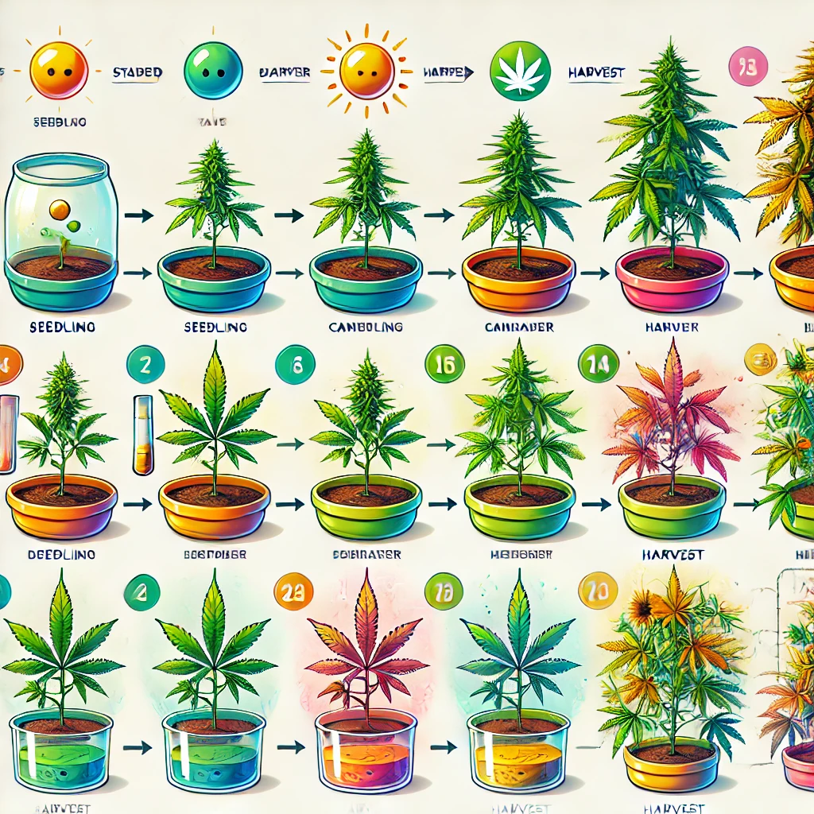

1: Select the Right Strain
Detailed Explanation:
The foundation of successful terpene steering starts with selecting the right cannabis strain. Each cannabis strain has a unique terpene profile, which significantly influences the aroma, flavor, and potential therapeutic effects of the plant. Therefore, choosing a strain with a terpene profile that aligns with your goals is critical.
- Identify Your Goals: Before selecting a strain, clearly define what you want to achieve. Are you aiming for a specific aroma or flavor, or are you targeting the potential therapeutic effects of certain terpenes? For instance, if you're looking for a relaxing effect, strains high in myrcene, like Granddaddy Purple or Blue Dream, might be ideal. If you want a more uplifting experience, strains rich in limonene, such as Super Lemon Haze, could be better suited.
- Research Terpene Profiles: Once your goals are set, research various strains to understand their terpene content. Resources like strain databases, scientific studies, and breeder information can provide detailed insights into the terpene profiles of different strains. Focus on strains that consistently show high levels of the terpenes you're interested in. For example, strains like OG Kush and Jack Herer are known for their complex and robust terpene profiles.
- Consider Genetic Stability: Another crucial factor is the genetic stability of the strain. Some strains may have a more consistent terpene profile across different plants and grows, while others might vary significantly. Choosing a strain with stable genetics ensures that you can reliably reproduce the terpene profile in subsequent grows.
- Consult with Experts: If possible, consult with experienced growers or breeders who have in-depth knowledge of specific strains. They can provide valuable insights based on their experiences and might recommend strains that have performed well in terms of terpene production under similar growing conditions.
By selecting the right strain at the outset, you lay a strong foundation for steering the terpene profile throughout the growing process. This initial step is critical, as it determines the potential range and intensity of terpenes your plants can produce.
Sources:
1. Booth, J. K., & Bohlmann, J. (2019). Terpenes in Cannabis sativa – From plant genome to humans. Plant Science, 284, 67-72.
2. Small, E. (2016). Cannabis: A Complete Guide. CRC Press.
2: Optimize Growing Conditions
Detailed Explanation:
Optimizing the growing conditions of your cannabis plants is crucial for promoting healthy growth and maximizing terpene production. Terpenes are sensitive to various environmental factors, so carefully managing these conditions can significantly enhance the terpene profile of your plants.
- Light Management:
- Light Intensity: Aim for a high light intensity, particularly in the flowering stage, to stimulate terpene production. Many growers use high-pressure sodium (HPS) lights or LED lights designed for cannabis cultivation, as they provide the spectrum necessary for optimal plant development.
- Light Spectrum: Blue light is known to promote the development of terpenes like pinene, while red light can enhance the overall terpene profile. Some growers incorporate UV-B light during the last few weeks of flowering, as it can stress the plant slightly, leading to increased terpene production. However, this technique should be used carefully to avoid damaging the plants.
- Photoperiod: The photoperiod (light-dark cycle) is also important. During the vegetative stage, a common light cycle is 18 hours of light and 6 hours of darkness. In the flowering stage, switch to a 12/12 cycle. Some growers experiment with shorter light periods in the final weeks to boost terpene concentration.
- Watering Practices:
- Frequency and Quantity: Water your plants consistently, allowing the top inch of soil to dry out between waterings. Ensure that your pots have good drainage to prevent waterlogging. The amount of water needed will vary based on the plant's size, growth stage, and environmental conditions.
- Water Quality: Use clean, pH-balanced water. The ideal pH range for cannabis plants is between 6.0 and 7.0. High or low pH levels can affect nutrient uptake, potentially hindering terpene production.
- Nutrient Management:
- Vegetative Stage: During the vegetative stage, the focus should be on providing nitrogen-rich nutrients to support leafy growth. However, it's also important to provide micronutrients like calcium, magnesium, and sulfur, which play a role in terpene synthesis.
- Flowering Stage: As the plants enter the flowering stage, reduce nitrogen levels and increase phosphorus and potassium to support bud development and terpene production. Sulfur is particularly important during flowering, as it is a key component in the biosynthesis of many terpenes.
- Organic vs. Synthetic Nutrients: Consider using organic nutrients, as they can enhance the overall flavor and aroma of the cannabis by improving soil health and microbial activity, which in turn supports terpene production.
- Temperature and Humidity Control:
- Temperature: Maintain a temperature range of 65-80°F (18-26°C) during the day and slightly cooler temperatures at night. Extreme temperatures can stress the plant, potentially reducing terpene production.
- Humidity: Keep humidity levels between 40-60% during the vegetative stage, lowering to 40-50% during the flowering stage. High humidity can lead to mold and mildew, which can destroy terpenes, while low humidity can stress the plant and reduce its terpene output.
- Air Circulation: Proper air circulation helps prevent mold and mildew, which can negatively affect terpene production. Ensure that your grow space has adequate ventilation to keep the air moving and maintain optimal humidity levels.
By carefully managing these growing conditions, you create an environment where your cannabis plants can thrive and produce a rich and potent terpene profile. Tailoring your cultivation techniques to the specific needs of your plants at each stage of growth is key to maximizing their terpene potential.
Sources:
1. Backer, R., Schwinghamer, T., Rosenbaum, P., McCarty, V., Bilodeau, S. E., & Smith, D. L. (2019). Closing the Yield Gap for Cannabis: A Meta-Analysis of Factors Determining Cannabis Yield. Frontiers in Plant Science, 10, 495.
2. Lydon, J., Teramura, A. H., & Coffman, C. B. (1987). UV-B radiation effects on the growth and cannabinoid content of two Cannabis sativa chemotypes. Journal of Experimental Botany, 38(4), 735-744.
3: Use Specific Nutrients
Detailed Explanation:
The type and timing of nutrients you provide to your cannabis plants can have a significant impact on terpene production. By incorporating specific nutrient-rich fertilizers and organic compost, you can boost the synthesis of terpenes, resulting in a more aromatic and potent crop.
- Understanding Nutrient Needs: Cannabis plants require a balance of macronutrients (nitrogen, phosphorus, potassium) and micronutrients (calcium, magnesium, sulfur, and others) throughout their life cycle. However, certain nutrients play a more direct role in terpene synthesis, particularly during the flowering stage.
- Macronutrients:
- Nitrogen (N): Nitrogen is essential during the vegetative stage for promoting leafy growth. However, during the flowering stage, nitrogen levels should be reduced to prevent excessive vegetative growth at the expense of flower and terpene production.
- Phosphorus (P): Phosphorus is crucial during the flowering stage as it supports the development of buds and roots, indirectly influencing terpene production. It is important to maintain adequate phosphorus levels to ensure robust flower growth, which is where terpenes are primarily produced.
- Potassium (K): Potassium helps regulate various physiological processes in cannabis, including water uptake and enzyme activation, both of which are essential for healthy growth and terpene synthesis.
- Micronutrients:
- Sulfur (S): Sulfur is a key component in the biosynthesis of many terpenes. Ensuring that your plants receive adequate sulfur, especially during the flowering stage, can directly boost terpene production. Organic sources of sulfur, such as gypsum or Epsom salts, are particularly effective.
- Magnesium (Mg): Magnesium is vital for photosynthesis and the production of chlorophyll. Healthy photosynthesis supports overall plant vitality, which in turn promotes terpene synthesis. Magnesium deficiencies can lead to weakened terpene production, so it's important to supplement if needed.
- Calcium (Ca): Calcium is essential for cell wall development and overall plant structure. Strong, healthy plants are better able to produce and retain terpenes, making calcium an important part of your nutrient regimen.
- Organic Nutrients and Compost:
- Organic Compost: Incorporating organic compost into your soil can improve soil health by enhancing microbial activity, which aids in nutrient uptake and overall plant health. Healthy soil rich in organic matter can significantly enhance terpene production.
- Kelp and Seaweed Extracts: These natural supplements are rich in micronutrients, amino acids, and growth hormones that can stimulate terpene production. They also help improve plant stress resistance, which is important for maintaining high terpene levels.
- Molasses: Adding molasses to your feeding regimen can increase the availability of sugars and other nutrients in the soil, promoting microbial activity and enhancing terpene synthesis.
- Timing and Application:
- During the vegetative stage, focus on providing a balanced mix of nitrogen, phosphorus, and potassium along with essential micronutrients. As the plants transition to the flowering stage, reduce nitrogen and increase phosphorus and potassium levels.
- Apply sulfur-rich supplements like Epsom salts during the flowering stage to boost terpene production.
- Use organic compost and natural supplements like kelp throughout the growing cycle to maintain soil health and support consistent terpene synthesis.
- Avoid Overfeeding:
- Overfeeding can lead to nutrient burn, which can stress your plants and negatively impact terpene production. Always follow the recommended feeding schedules and adjust based on your plants' responses. A good practice is to feed with nutrients during every other watering, alternating with plain water to prevent buildup and ensure proper nutrient absorption.
By carefully selecting and applying the right nutrients at the right times, you can significantly enhance your cannabis plants' terpene profiles, resulting in a richer, more aromatic harvest.
Sources:
1. Russo, E. B. (2011). Taming THC: potential cannabis synergy and phytocannabinoid-terpenoid entourage effects. British Journal of Pharmacology, 163(7), 1344-1364.
2. Backer, R., Schwinghamer, T., Rosenbaum, P., McCarty, V., Bilodeau, S. E., & Smith, D. L. (2019). Closing the Yield Gap for Cannabis: A Meta-Analysis of Factors Determining Cannabis Yield. Frontiers in Plant Science, 10, 495.
3. Potter, D. J. (2014). A review of the cultivation and processing of cannabis (Cannabis sativa L.) for production of prescription medicines in the UK. Drug Testing and Analysis, 6(1-2), 14-18.
4: Monitor Temperature
Detailed Explanation:
Maintaining the correct temperature throughout the growing process is crucial for preserving and enhancing terpene production in cannabis plants. Terpenes are volatile compounds that can easily degrade when exposed to high temperatures, which can diminish the potency, flavor, and aroma of your final product. Here’s how to effectively manage temperature to optimize terpene retention:
- Understand Temperature Sensitivity:
- Terpene Preservation: Terpenes are highly sensitive to temperature fluctuations. When temperatures rise too high, these delicate compounds can evaporate, leading to a loss in the desired aroma and therapeutic effects. Conversely, extremely low temperatures can stress the plant and potentially inhibit terpene production.
- Optimal Temperature Ranges:
- Vegetative Stage: During the vegetative stage, the ideal temperature range is between 70-85°F (21-29°C). This range supports healthy growth and helps set the foundation for robust terpene production as the plant matures.
- Flowering Stage: In the flowering stage, maintaining slightly cooler temperatures is beneficial for preserving terpenes. Aim for a range of 65-80°F (18-26°C) during the day, with a slight drop at night. Cooler nighttime temperatures, around 60-70°F (15-21°C), can help prevent terpene degradation.
- Avoiding High Temperatures:
- Risk of Degradation: Temperatures above 80°F (26°C) during the flowering stage can start to degrade terpenes, particularly the more volatile ones like myrcene and linalool. If the temperature exceeds 85°F (29°C), terpene loss can become significant, leading to a less potent and flavorful product.
- Heat Stress: In addition to terpene degradation, high temperatures can cause heat stress, which negatively impacts overall plant health and can reduce the yield. Signs of heat stress include leaf curling, yellowing, and slow growth.
- Managing Temperature in Indoor Grows:
- Climate Control: Utilize air conditioning, fans, and exhaust systems to maintain stable temperatures within the optimal range. For precision, consider using a thermostat or environmental controller that automatically adjusts heating and cooling devices to keep temperatures consistent.
- Lighting Considerations: High-intensity lights, especially HPS and MH lamps, generate a lot of heat. Position your lights at an appropriate distance from the canopy to avoid excessive heat. Alternatively, consider using LED lights, which emit less heat and allow for better temperature control.
- Outdoor Growing Tips:
- Shade and Ventilation: If growing outdoors, monitor the weather forecast regularly to avoid heatwaves. During particularly hot days, use shade cloths to protect your plants from direct sunlight and prevent overheating. Ensure good air circulation around your plants to dissipate heat.
- Cooling Techniques: In hot climates, watering the soil during the cooler parts of the day (early morning or late evening) can help regulate root zone temperatures. Mulching around the base of your plants can also help keep the soil cool.
- Consistent Monitoring:
- Thermometers and Hygrometers: Regularly monitor the temperature in your grow area using reliable thermometers or hygrometers. Place these devices at the canopy level, as this is where temperature fluctuations can have the most impact on terpene production.
- Adjustments: If temperatures start to exceed the optimal range, take immediate action by adjusting your climate control systems. It's better to prevent temperature spikes than to try to mitigate the effects after they occur.
By maintaining a stable and moderate temperature environment, you can preserve the delicate terpenes in your cannabis plants, ensuring a more flavorful, aromatic, and potent final product.
Sources:
1. McPartland, J. M., & Russo, E. B. (2001). Cannabis and cannabis extracts: greater than the sum of their parts? Journal of Cannabis Therapeutics, 1(3-4), 103-132.
2. Booth, J. K., & Bohlmann, J. (2019). Terpenes in Cannabis sativa – From plant genome to humans. Plant Science, 284, 67-72.
3. Small, E. (2016). Cannabis: A Complete Guide. CRC Press.
5: Control Humidity
Detailed Explanation:
Proper humidity control is vital in preserving and enhancing the terpene profile of your cannabis plants. High humidity can lead to mold, mildew, and other issues that can degrade terpenes, compromising the quality and potency of your final product. By maintaining optimal humidity levels, you can ensure that your plants develop and retain a rich terpene profile.
- Understanding the Impact of Humidity:
- High Humidity Risks: High humidity levels, particularly during the flowering stage, create an environment conducive to mold and mildew, which can damage or destroy terpenes. These conditions can also make the plant more susceptible to pests, further stressing the plant and reducing terpene production.
- Low Humidity Risks: While high humidity is detrimental, extremely low humidity can also stress the plant, leading to issues like slower growth and reduced terpene output. The key is to strike a balance that supports healthy plant development without compromising terpene integrity.
- Optimal Humidity Ranges:
- Vegetative Stage: During the vegetative stage, cannabis plants thrive in a relative humidity (RH) range of 40-60%. This range supports healthy leaf and root development without encouraging mold or mildew growth.
- Flowering Stage: As the plant transitions to the flowering stage, gradually reduce the humidity to 40-50%. Lowering the humidity at this stage helps protect the delicate buds and terpenes from moisture-related damage. In the final weeks of flowering, further reduce humidity to around 30-40% to maximize terpene preservation and prevent mold growth.
- Humidity Control Techniques:
- Dehumidifiers: In indoor growing environments, using a dehumidifier is one of the most effective ways to control humidity levels. Choose a dehumidifier that is appropriately sized for your grow space to ensure it can maintain the desired humidity range consistently.
- Ventilation: Proper ventilation is crucial in managing humidity. Use exhaust fans to remove humid air from your grow space and bring in fresh, drier air. Oscillating fans can also help circulate air within the room, reducing the chances of moisture buildup around the plants.
- Air Conditioning: Air conditioning units can help reduce both temperature and humidity levels. If using an air conditioner, make sure it’s appropriately sized for your space and regularly maintained to avoid any moisture-related issues.
- Monitoring and Adjusting Humidity:
- Hygrometers: Use digital hygrometers to continuously monitor humidity levels in your grow space. Place multiple hygrometers at different points in the room, especially at canopy level, to get an accurate reading of the environment your plants are experiencing.
- Humidity Control Systems: For advanced growers, automated humidity control systems that integrate with your climate control setup can provide precise adjustments, ensuring that your grow environment remains stable even if external conditions change.
- Managing Humidity in Outdoor Grows:
- Natural Ventilation: Outdoor grows benefit from natural air circulation, but humidity can still be an issue, especially in regions with high rainfall or fog. Planting in well-drained soil and ensuring sufficient spacing between plants can help reduce humidity levels around the plant canopy.
- Shade Cloths and Greenhouses: In humid climates, using shade cloths to reduce direct exposure to rainfall and morning dew can help keep humidity in check. Alternatively, greenhouses with good ventilation systems allow for more controlled humidity management in an outdoor setting.
- Drying and Curing Considerations:
- Post-Harvest Humidity Control: Even after harvest, controlling humidity is critical during the drying and curing processes to preserve terpenes. Aim for a drying environment with 45-55% RH and then cure your buds in airtight jars with humidity packs to maintain a stable environment around 58-62% RH.
By effectively controlling humidity levels throughout the growing process, you protect your plants from environmental stressors that can degrade terpenes. This careful management helps ensure that your cannabis retains its full aromatic and therapeutic potential.
Sources:
1. Mahlberg, P. G., & Kim, E. S. (2004). Accumulation of Cannabinoids in Glandular Trichomes of Cannabis (Cannabaceae). Journal of Industrial Hemp, 9(1), 15-36.
2. Small, E. (2016). Cannabis: A Complete Guide. CRC Press.
3. Russo, E. B. (2011). Taming THC: potential cannabis synergy and phytocannabinoid-terpenoid entourage effects. British Journal of Pharmacology, 163(7), 1344-1364.
6: Harvest at the Right Time
Detailed Explanation:
Harvesting at the optimal time is one of the most critical steps in capturing and preserving the full terpene profile of your cannabis plants. The timing of your harvest can significantly influence the potency, flavor, and aroma of the final product. Here's how to ensure you harvest at the perfect moment:
- Understanding Trichomes and Terpene Production:
- Trichomes: Trichomes are the tiny, crystal-like structures on cannabis flowers that contain the highest concentrations of cannabinoids and terpenes. These glandular structures are responsible for the plant's sticky resin and are key indicators of when to harvest.
- Terpene Peaks: Terpenes reach their peak potency at a specific point during the flowering stage. Harvesting too early or too late can result in the loss of these delicate compounds, leading to a less aromatic and less potent product.
- Monitoring Trichome Development:
- Clear Trichomes: Early in the flowering stage, trichomes appear clear and transparent. At this stage, the terpene content is still developing, and the cannabinoids have not fully matured.
- Cloudy/Milky Trichomes: As the plant approaches its peak, the trichomes will turn cloudy or milky. This stage indicates that the terpenes and cannabinoids are at their highest concentration, making it the ideal time to harvest if your goal is to capture the most robust terpene profile.
- Amber Trichomes: If left longer, trichomes will start to turn amber as the cannabinoids begin to degrade into CBN (cannabinol). While some growers prefer this stage for a more sedative effect, it typically results in a slight reduction in terpene intensity.
- Tools for Monitoring:
- Magnifying Glass or Microscope: To accurately assess trichome development, use a magnifying glass or a handheld microscope with at least 30x magnification. This allows you to closely inspect the trichomes and determine the optimal harvest time.
- Digital Microscopes: For even greater precision, consider using a digital microscope that connects to a smartphone or computer. These devices can provide high-resolution images, making it easier to monitor trichome color and clarity.
- Balancing Cannabinoid and Terpene Maturity:
- Desired Effects: The exact timing of your harvest should also consider the balance between cannabinoid maturity and terpene retention. If you prefer a more uplifting effect, harvesting when the trichomes are mostly cloudy but before they turn amber will help maintain a high terpene content alongside potent THC levels. For a more relaxing effect, you might wait until some trichomes start turning amber.
- Strain-Specific Considerations: Different strains may have varying optimal harvest windows. Sativa strains, for instance, might benefit from an earlier harvest when trichomes are just turning cloudy, while indica strains might be better harvested slightly later.
- Harvesting Technique:
- Minimizing Light Exposure: When you decide to harvest, try to minimize light exposure as much as possible. Light can degrade terpenes and cannabinoids, so it's best to harvest in dim lighting or during the early morning hours if growing outdoors.
- Handling with Care: Handle the buds gently to avoid damaging the trichomes. Use sharp, clean scissors to cut the branches, and avoid touching the buds directly as much as possible to preserve the resinous trichomes.
- Post-Harvest Timing:
- Immediate Drying: After harvesting, immediately begin the drying process to prevent terpene loss. Hanging the branches upside down in a cool, dark, and well-ventilated space is the best way to start this process.
- Avoiding Delays: Delaying the drying process can lead to terpene evaporation and potential mold growth, both of which can compromise the quality of your harvest.
By harvesting your cannabis plants at the precise moment when trichomes are at their peak, you can maximize terpene retention, ensuring a final product that is rich in flavor, aroma, and therapeutic potential.
Sources:
1. Potter, D. J. (2014). A review of the cultivation and processing of cannabis (Cannabis sativa L.) for production of prescription medicines in the UK. Drug Testing and Analysis, 6(1-2), 14-18.
2. Russo, E. B. (2011). Taming THC: potential cannabis synergy and phytocannabinoid-terpenoid entourage effects. British Journal of Pharmacology, 163(7), 1344-1364.
3. Small, E. (2016). Cannabis: A Complete Guide. CRC Press.
7: Dry and Cure Properly
Detailed Explanation:
Proper drying and curing are critical steps in preserving and enhancing the terpene profile of your cannabis. These processes allow the terpenes to mature and fully develop, resulting in a more potent, flavorful, and aromatic final product. Here’s how to execute these steps effectively:
- Importance of Slow Drying:
- Terpene Preservation: Terpenes are highly volatile compounds that can easily evaporate if exposed to high temperatures or rapid drying conditions. Slow drying helps prevent this evaporation, preserving the full spectrum of terpenes in your cannabis.
- Mold Prevention: Slow drying in a controlled environment also reduces the risk of mold and mildew, which can destroy terpenes and compromise the quality of your harvest.
- Optimal Drying Conditions:
- Temperature: Maintain a drying temperature between 60-70°F (15-21°C). This cool temperature range helps preserve terpenes while preventing the degradation of cannabinoids.
- Humidity: Aim for a relative humidity (RH) of 45-55% during the drying process. This humidity level allows for gradual moisture loss, which is crucial for terpene retention and overall bud quality.
- Airflow: Ensure good air circulation in the drying area to prevent moisture buildup. Use fans to create a gentle airflow, but avoid direct air on the buds to prevent over-drying.
- Drying Techniques:
- Hanging Method: The most common method for drying cannabis is to hang the branches upside down in a dark, well-ventilated space. This method promotes even drying and helps maintain the integrity of the trichomes.
- Rack Drying: Alternatively, you can use drying racks to lay out the buds individually. This method is useful if space is limited, but ensure that buds are not overcrowded to allow for adequate airflow.
- Monitoring the Drying Process:
- Stem Snap Test: The drying process typically takes 7-14 days, depending on the environmental conditions. To check if the buds are dry, perform the stem snap test. When the smaller stems snap cleanly rather than bending, the buds are ready for curing.
- Touch and Feel: The buds should feel dry to the touch but not brittle. Over-drying can cause terpenes to evaporate and lead to harsh smoke, so monitoring is key.
- Proper Curing Techniques:
- Curing Jars: Once the buds are dry, transfer them to airtight glass jars for curing. Avoid plastic bags or containers, as they can affect the flavor and aroma of the buds. Mason jars are commonly used because they seal well and protect the buds from light exposure.
- Humidity Control: Use humidity packs designed for cannabis to maintain a consistent RH of 58-62% within the jars. This humidity range allows the buds to cure properly, enhancing the flavor and potency by allowing the terpenes to mature.
- Burping the Jars: During the first two weeks of curing, "burp" the jars daily. This involves opening the jars for a few minutes to release excess moisture and allow fresh air to circulate. After the initial two weeks, you can reduce burping to once every few days.
- Curing Duration:
- Two Weeks Minimum: A minimum of two weeks is necessary for a proper cure, though many growers prefer to cure for 4-8 weeks for optimal terpene development. The longer the curing process (up to a point), the more the terpenes can mature, leading to a richer and more complex flavor profile.
- Patience Pays Off: While it might be tempting to use your cannabis early, patience during the curing process will result in a significantly better final product. Properly cured cannabis not only tastes and smells better but also offers a smoother, more enjoyable smoking experience.
- Storage Post-Curing:
- Long-Term Storage: After curing, store your cannabis in a cool, dark place. Light and heat can degrade both terpenes and cannabinoids, so keep the jars sealed and stored away from direct light. For long-term storage, consider using vacuum-sealed jars to further protect the terpenes.
By drying and curing your cannabis slowly and carefully, you maximize the retention and maturation of terpenes, ensuring that your final product is as potent and aromatic as possible.
Sources:
1. Chandra, S., Lata, H., ElSohly, M. A., & Walker, L. A. (2017). Cannabis Cultivation: Methodologies and Protocols. Methods in Molecular Biology, 1563, 1-15.
2. Small, E. (2016). Cannabis: A Complete Guide. CRC Press.
3. McPartland, J. M., & Russo, E. B. (2001). Cannabis and cannabis extracts: greater than the sum of their parts? Journal of Cannabis Therapeutics, 1(3-4), 103-132.
8: Store Correctly
Detailed Explanation:
Proper storage of your cannabis is essential to maintaining the quality and potency of the terpenes. After going through the meticulous processes of growing, harvesting, drying, and curing, the final step is ensuring that your buds are stored in a way that preserves the terpenes and prevents degradation over time. Here's how to store your cannabis correctly:
- Use Airtight Containers:
- Glass Jars: The best storage containers for cannabis are airtight glass jars, such as Mason jars. Glass is non-porous and does not affect the flavor or aroma of the cannabis, unlike plastic, which can interact with the terpenes and alter the taste. Ensure the jars have a tight seal to keep out air and moisture.
- Vacuum-Sealed Containers: For long-term storage, consider vacuum-sealing your cannabis in glass jars or special vacuum-sealable bags. This method removes most of the oxygen, which helps preserve terpenes and cannabinoids by minimizing oxidation.
- Protect from Light:
- UV Light Degradation: Light, particularly UV light, can degrade both terpenes and cannabinoids, reducing the potency and quality of your cannabis. To protect your buds, store them in a dark place, such as a cupboard or drawer. Avoid transparent containers unless they are stored in complete darkness. If using glass jars, consider using amber or dark-colored glass to block out light.
- Opaque Containers: If you’re storing cannabis in a place where it might be exposed to light, use opaque or dark-tinted containers that block light while still being airtight.
- Maintain Cool Temperatures:
- Ideal Storage Temperature: The optimal temperature for storing cannabis is between 60-70°F (15-21°C). Higher temperatures can cause terpenes to evaporate and degrade, while lower temperatures can lead to mold if the humidity isn’t controlled.
- Avoid Heat Sources: Keep your storage containers away from heat sources like stoves, radiators, or direct sunlight. Fluctuations in temperature can lead to condensation inside the jars, which can increase the risk of mold and mildew.
- Control Humidity:
- Humidity Packs: To maintain the ideal relative humidity inside your storage containers (between 58-62%), use humidity control packs specifically designed for cannabis. These packs help prevent your buds from drying out or becoming too moist, both of which can negatively impact terpene quality.
- Avoid Excess Moisture: Excess moisture in the storage environment can lead to mold growth, which can destroy the terpenes and render the cannabis unusable. Regularly check the humidity levels inside your containers and replace humidity packs as needed.
- Limit Oxygen Exposure:
- Oxidation Risks: Oxygen is one of the primary factors that can degrade terpenes over time. It can cause the cannabis to lose potency and alter the flavor profile. To minimize oxygen exposure, ensure your containers are airtight, and consider vacuum-sealing for long-term storage.
- Frequent Opening: If you need to access your cannabis frequently, use smaller containers for daily use and keep the bulk of your stash sealed in larger jars. This way, you minimize the number of times you expose the main supply to air.
- Long-Term Storage Considerations:
- Freezing Cannabis: Some growers opt to freeze cannabis for long-term storage. While freezing can preserve cannabinoids and terpenes, it must be done carefully. If not properly sealed, moisture can enter and cause freezer burn or mold. Only use this method if you are confident in your ability to vacuum-seal the cannabis securely.
- Periodic Checks: If you’re storing cannabis for an extended period, periodically check your jars for any signs of moisture or mold. Also, give the buds a gentle smell to ensure the aroma is still intact, which is a good indicator of terpene preservation.
By following these storage practices, you can keep your cannabis fresh, potent, and flavorful for months, ensuring that the hard work you've put into terpene preservation pays off long after the harvest.
Sources:
1. Russo, E. B. (2011). Taming THC: potential cannabis synergy and phytocannabinoid-terpenoid entourage effects. British Journal of Pharmacology, 163(7), 1344-1364.
2. Small, E. (2016). Cannabis: A Complete Guide. CRC Press.
3. Potter, D. J. (2014). A review of the cultivation and processing of cannabis (Cannabis sativa L.) for production of prescription medicines in the UK. Drug Testing and Analysis, 6(1-2), 14-18.
9: Experiment with Supplements
Detailed Explanation:
To take your terpene production to the next level, experimenting with supplements and natural additives can be highly beneficial. These substances can enhance the biosynthesis of terpenes, resulting in a more complex and potent terpene profile. Here’s how to effectively incorporate supplements into your cultivation process:
- Understanding the Role of Supplements:
- Biostimulants and Additives: Supplements such as biostimulants, organic fertilizers, and natural additives can provide your plants with additional nutrients and growth hormones that promote overall plant health and enhance terpene production. These substances can stimulate the plant's metabolic processes, leading to increased terpene synthesis.
- Molasses: One of the most popular natural supplements among cannabis growers is molasses. Rich in sugars, iron, calcium, and magnesium, molasses feeds beneficial microbes in the soil, which in turn help the plant absorb nutrients more effectively. This boost in nutrient uptake can lead to stronger, healthier plants that produce higher levels of terpenes.
- Types of Supplements to Consider:
- Molasses: Molasses is typically used during the flowering stage to enhance the microbial activity in the soil. This increase in beneficial bacteria and fungi helps improve nutrient availability, leading to better terpene production. It’s often mixed into water and fed to plants weekly during the last few weeks of flowering.
- Kelp and Seaweed Extracts: These are rich in micronutrients, amino acids, and natural growth hormones. Kelp extracts can enhance the plant's stress resistance, leading to improved terpene synthesis. These supplements are also known to enhance the flavor and aroma profiles of cannabis.
- Humic and Fulvic Acids: These organic compounds improve nutrient uptake by chelating minerals and making them more available to the plant. They help create a more efficient nutrient delivery system, which can boost the overall health of the plant and enhance terpene production.
- Amino Acids: Amino acids are the building blocks of proteins, and supplementing your plants with amino acids can support various physiological processes, including terpene biosynthesis. These are typically available as foliar sprays or soil additives.
- Compost Teas: Compost teas are brewed using organic compost and can include a variety of beneficial microbes and nutrients that enhance soil health and nutrient availability. These teas can be used to water the plants during the vegetative and flowering stages to boost terpene production.
- Application Techniques:
- Foliar Feeding: Some supplements, particularly those rich in micronutrients and amino acids, can be applied directly to the leaves in a process known as foliar feeding. This method allows for rapid absorption of nutrients, potentially giving a quick boost to terpene production. However, foliar feeding should be done carefully to avoid burning the leaves, and it’s best done in the early morning or late evening to avoid direct sunlight.
- Soil Drenching: Most supplements, like molasses, kelp extracts, and compost teas, are applied directly to the soil. This method ensures that the nutrients are delivered to the root zone, where they can be absorbed and utilized by the plant. Regularly drenching the soil with these supplements during the flowering stage can significantly enhance terpene profiles.
- Experimentation and Observation:
- Start with Small Doses: When introducing any new supplement, start with small doses to see how your plants respond. Gradually increase the dosage if you observe positive effects, such as stronger growth, richer aroma, and better overall plant health.
- Document Results: Keep detailed records of what supplements you use, how much you apply, and the effects you observe. Over time, this documentation will help you refine your supplementation strategy and identify the combinations that work best for boosting terpene production in your specific strains.
- Avoid Overuse:
- Balance is Key: While supplements can be highly beneficial, overuse can lead to nutrient imbalances, which can stress the plant and negatively impact terpene production. It’s important to balance your supplementation with a solid base of organic soil or high-quality nutrient mixes.
- Watch for Plant Stress: If you notice signs of nutrient burn, leaf discoloration, or other stress indicators, reduce the frequency or dosage of your supplements.
By exploring and carefully incorporating natural supplements and biostimulants into your growing regimen, you can significantly enhance the terpene profile of your cannabis plants, leading to a more flavorful and aromatic final product.
Sources:
1. Russo, E. B. (2011). Taming THC: potential cannabis synergy and phytocannabinoid-terpenoid entourage effects. British Journal of Pharmacology, 163(7), 1344-1364.
2. Backer, R., Schwinghamer, T., Rosenbaum, P., McCarty, V., Bilodeau, S. E., & Smith, D. L. (2019). Closing the Yield Gap for Cannabis: A Meta-Analysis of Factors Determining Cannabis Yield. Frontiers in Plant Science, 10, 495.
3. Small, E. (2016). Cannabis: A Complete Guide. CRC Press.
10: Regularly Test Your Product
Detailed Explanation:
Regular lab testing of your cannabis is a critical step in understanding and optimizing your terpene profile. By analyzing your product, you can gain precise insights into the composition of terpenes and cannabinoids, allowing you to make informed adjustments to your cultivation techniques. Here’s how to effectively incorporate testing into your growing process:
- Understanding the Importance of Lab Testing:
- Understanding the Importance of Lab Testing:
- Terpene Profiling: Lab testing provides a detailed breakdown of the terpene profile in your cannabis. This analysis not only identifies which terpenes are present but also their relative concentrations. Understanding these specifics can help you determine whether your growing techniques are successfully steering the terpene production in the desired direction.
- Quality Assurance: Regular testing ensures that your cannabis meets quality standards, both in terms of terpene content and overall safety. Testing can detect contaminants like pesticides, heavy metals, or mold, which could compromise the quality and safety of your product.
- Types of Tests to Conduct:
- Terpene Analysis: The primary test for growers focused on terpene steering is a terpene profile analysis. This test quantifies the different terpenes present in your cannabis and their concentrations, giving you a clear picture of the aromatic and therapeutic potential of your product.
- Cannabinoid Testing: While focused on terpenes, it’s also beneficial to test for cannabinoid content (THC, CBD, CBN, etc.). Understanding the balance between cannabinoids and terpenes can help you tailor your product for specific effects, known as the entourage effect.
- Contaminant Screening: Regular screening for contaminants such as pesticides, heavy metals, and microbial impurities is essential, especially if you’re growing for commercial purposes. Ensuring that your product is free from harmful substances is crucial for both legal compliance and consumer safety.
- When to Test:
- Pre-Harvest Testing: Conducting a test during the final weeks of flowering can provide insights into the terpene profile before harvest. This can guide any last-minute adjustments, such as altering the light cycle or nutrient feed.
- Post-Harvest Testing: After drying and curing, conduct another round of tests to see how the terpene profile has evolved. This will give you a clear picture of the final product’s quality and help you assess the effectiveness of your curing process.
- Periodic Testing: For growers who are continuously cultivating, periodic testing after each harvest cycle is recommended. This regular testing helps in tracking the consistency of terpene production and identifying any trends or changes over time.
- Interpreting Test Results:
- Compare Against Targets: Use the lab results to compare the terpene levels against your targets. If certain terpenes are lower than expected, this could indicate a need to adjust factors like temperature, humidity, or nutrient levels in future grows.
- Identify Patterns: Over multiple harvests, analyze the data to identify patterns in terpene production. This can help you fine-tune your growing techniques to consistently achieve the desired terpene profile.
- Adjust and Experiment: Based on the results, make informed decisions about adjusting your cultivation practices. For instance, if limonene levels are consistently low, you might experiment with increasing light exposure or using different supplements.
- Choosing a Reliable Testing Lab:
- Accredited Labs: Ensure that the lab you choose is accredited and specializes in cannabis testing. Accreditation ensures that the lab follows standardized procedures, providing accurate and reliable results.
- Comprehensive Testing: Select a lab that offers comprehensive testing services, including terpene profiling, cannabinoid analysis, and contaminant screening. The more data you have, the better you can refine your growing techniques.
- Using Data to Refine Techniques:
- Data-Driven Adjustments: Use the insights gained from testing to make data-driven adjustments to your growing techniques. Whether it’s tweaking nutrient levels, adjusting environmental controls, or trying new supplements, the data will guide your decisions.
- Continuous Improvement: Treat each test as a learning opportunity. Over time, continuous testing and refinement will lead to a more consistent and high-quality product with a terpene profile tailored to your goals.
Regular lab testing not only ensures the quality and safety of your cannabis but also empowers you to make precise, informed decisions that enhance the terpene profile. By embracing a data-driven approach, you can achieve the best possible results in your cultivation efforts.
Sources:
1. Booth, J. K., & Bohlmann, J. (2019). Terpenes in Cannabis sativa – From plant genome to humans. Plant Science, 284, 67-72.
2. McPartland, J. M., & Russo, E. B. (2001). Cannabis and cannabis extracts: greater than the sum of their parts? Journal of Cannabis Therapeutics, 1(3-4), 103-132.
3. Small, E. (2016). Cannabis: A Complete Guide. CRC Press.
